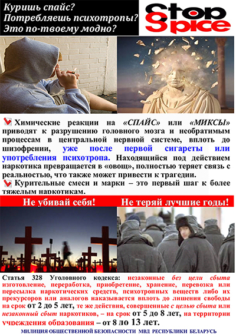

ОСТОРОЖНО – СПАЙС! (скачать)
Ответственность за употребление и незаконный оборот наркотических средств, психотропных веществ, их аналогов и прекурсоров (скачать)

Декрет № 6 от 28 декабря 2014 г. (выдержки)
"О неотложных мерах по противодействию незаконному обороту наркотиков" (скачать)
| флешмоб " SТОР! СПАЙСЫ! | ||
| 26 апреля прошла тематическая дискотека " SТОП ! СПАЙСЫ!" | ||
 |
||
STOP!
«СПАЙСЫ»:
какую опасность представляют курительные смеси?
Что такое «Спайсы»?
В последнее время в подростковой среде начали активно распространяться так называемые «курительные смеси» под торговым названием «Спайс» (так называлось вещество в фантастическом романе Фрэнка Герберта «Дюна», вдыхание которого вызывало яркие галлюцинации). Продавцы этих смесей зазывают яркими ощущениями, полной безвредностью для здоровья и легальностью. Однако это не так.
Травяные курительные смеси («спайсы», «арома-миксы») – это синтетические курительные смеси, обладающие психоактивным действием, аналогичным действию марихуаны. Поставляются в продажу в виде травы с нанесенным химическим наркотическим веществом (синтетическими каннабиноидами). Именно это вещество вызывает зависимость, сравнимую по силе с внутривенными наркотиками, и может привести к внезапной смерти при передозировке и развитию галлюцинаций.
«Спайсы» обычно расфасованы в пакетики из фольги или полиэтилена с субстанцией зеленоватого, зеленовато-желтого, зеленовато-коричневого цветов, возможно наличие разнообразных надписей и рисунков на пакетиках. Обнаружив у члена своей семьи или друга подобную упаковку с яркой этикеткой, обратите на нее должное внимание.
Влияние курительных смесей на организм человека
Систематическое курение смесей приводит к необратимым деструктивным процессам в организме человека:
- снижается внимание, ухудшается память, замедляется мыслительная деятельность, теряется контроль над эмоциями (частые перепады настроения, появляется склонность к депрессиям, суициду;
- возникают психозы, психические нарушения различной степени тяжести вплоть до полного распада личности (подобные при шизофрении);
- снижается иммунитет, возникает импотенция (у юношей), нарушается гормональный фон (у девушек);
- повышается риск развития сахарного диабета, рака легких и т. д.;
- поражается сердечно-сосудистая система;
- отравление от передозировки, смерть.
Воздействие курительных смесей со временем может навсегда изменить личность человека, привести к тяжелой инвалидности, превратить его в наркозависимого больного.
Среди социальных последствий курения смесей можно выделить: проблемы в семье, на учебе, работе, равнодушие к себе и своему будущему, ослабление воли, потеря смысла жизни, связь с криминальными кругами, воровство, риск вовлечения в незаконный оборот наркотиков и т.д.
Как выявить?
Главная опасность данных наркотиков – их доступность и простота употребления.
Признаки употребления курительных смесей
Действие наркотика может длиться от 20 минут до нескольких часов.
· Сопровождается кашлем (обжигает слизистую);
· Сухостью во рту (требуется постоянное употребление жидкости);
· Мутный либо покрасневший белок глаз (важный признак! Наркоманы знают о нем, поэтому носят с собой глазные капли);
· Нарушение координации;
· Дефект речи (заторможенность, эффект вытянутой магнитофонной пленки);
· Заторможенность мышления;
· Неподвижность, застывание в одной позе при полном молчании (если сильно обкурился, минут на 20-30);
· Бледность кожных покровов;
· Учащенный пульс;
· Приступы смеха, потеря контроля над эмоциями, перепады настроения;
· Изменения зрительного и слухового восприятия (галлюцинации).
Что делать?
Если вы обнаружили у своего ребенка или друга признаки употребления курительных смесей, внимательно наблюдайте за его физическим состоянием, настроением, времяпрепровождением и окружением. В случаях эпизодического, однократного курения «Спайса» подростка еще можно остановить, поговорив по душам, разъяснив, что «Спайс» – это наркотик такой же силы, как героин, что его употребление смертельно опасно и приводит к наркомании. Почитайте вместе с ним в Интернете статьи на тему «Смерть от Спайса», «Самоубийство под Спайсом» и др. – и вы, может быть, раскроете подростку глаза на то, что употребляя этот наркотик, он ходит по лезвию ножа.
Коварство «Спайса» еще и в том, что он быстро вызывает привыкание, причем такой же силы, как героин или кокаин. В течение полугода потребления он так сильно затягивает, что самостоятельно бросить его уже невозможно. Если вы заметили, что ваш ребенок или знакомый курит «Спайс», стал агрессивным, раздражительным, у него появился специфический круг друзей – таких же любителей «побалдеть», он начал пропускать учёбу, брать без разрешения деньги – пора бить тревогу. Сами с этой бедой вы не справитесь – наркотическая зависимость очень сильная. Не стесняйтесь обращаться к подростковому наркологу, психологу, поговорите с классным руководителем. Помните, что закрыть глаза на эту беду не удастся, а ваше бездействие может обернуться страшной
Своевременное вмешательство взрослого в ситуацию важно потому, что дети живут целиком по принципу «здесь и теперь» и не думают о будущем.
О будущем должны подумать вы.
Вы можете обратиться за помощью к
подростковому врачу-наркологу и психологу бесплатно и анонимно, которые находятся по адресу: пр-т Московский, 64, «Витебский областной клинический центр
наркологии и психиатрии». Тел.: 47-64-38
круглосуточный АНОНИМНЫЙ Телефон
доверия 54-90-24
Медико-психологическая помощь и консультирование
Мы рядом, позвони!
Причины употребления наркотиков молодыми людьми (скачать)